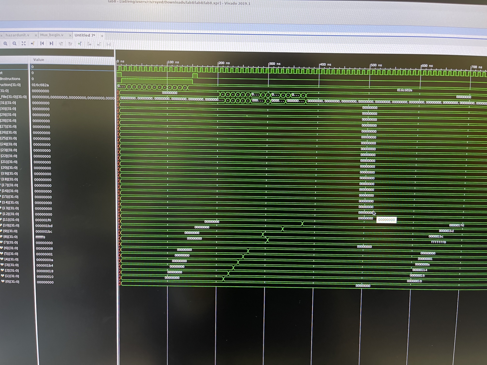

MIPS Pipeline Processor Implementation
Spring 2024
Project Description
This project involved designing and implementing a five-stage pipelined CPU and a single-cycle CPU in HDL as part of computer organization coursework. It connected digital logic design with processor architecture and instruction-level reasoning.
I worked on pipeline behavior, hazard handling, and ALU optimization while gaining a clearer understanding of how CPU design choices affect performance.
My Responsibilities
- Designed and implemented a five-stage pipelined CPU in HDL with hazard detection mechanisms.
- Optimized ALU operations within the pipeline to improve performance.
- Developed a single-cycle CPU in HDL as part of the overall architecture work.
Skills I Learned
- Processor architecture and digital design in HDL.
- Pipeline hazards, instruction flow, and performance tradeoffs.
- Systematic hardware debugging and verification.
Project Links
Photos
